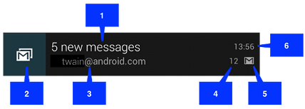

In this document
- Notification Display Elements
- Creating a Notification
- Managing Notifications
- Preserving Navigation when Starting an Activity
- Displaying Progress in a Notification
- Custom Notification Layouts
Key classes
Videos
See also
A notification is a message you can display to the user outside of your application's normal UI. When you tell the system to issue a notification, it first appears as an icon in the notification area. To see the details of the notification, the user opens the notification drawer. Both the notification area and the notification drawer are system-controlled areas that the user can view at any time.

Figure 1. Notifications in the notification area.

Figure 2. Notifications in the notification drawer.
Notification Design
Notifications, as an important part of the Android UI, have their own design guidelines. To learn how to design notifications and their interactions, read the Android Design Guide Notifications topic.
Note: Except where noted, this guide refers to the
NotificationCompat.Builder class
in the version 4 Support Library.
The class Notification.Builder was added in Android
3.0.
Notification Display Elements
Notifications in the notification drawer can appear in one of two visual styles, depending on the version and the state of the drawer:
- Normal view
- The standard view of the notifications in the notification drawer.
- Big view
- A large view that's visible when the notification is expanded. Big view is part of the expanded notification feature available as of Android 4.1.
These styles are described in the following sections.
Normal view
A notification in normal view appears in an area that's up to 64 dp tall. Even if you create a notification with a big view style, it will appear in normal view until it's expanded. This is an example of a normal view:
Figure 3. Notification in normal view.
The callouts in the illustration refer to the following:
- Content title
- Large icon
- Content text
- Content info
- Small icon
-
Time that the notification was issued. You can set an explicit value with
setWhen(); if you don't it defaults to the time that the system received the notification.
Big view
A notification's big view appears only when the notification is expanded, which happens when the notification is at the top of the notification drawer, or when the user expands the notification with a gesture. Expanded notifications are available starting with Android 4.1.
The following screenshot shows an inbox-style notification:

Figure 4. Big view notification.
Notice that the big view shares most of its visual elements with the normal view. The only difference is callout number 7, the details area. Each big view style sets this area in a different way. The available styles are:
- Big picture style
- The details area contains a bitmap up to 256 dp tall in its detail section.
- Big text style
- Displays a large text block in the details section.
- Inbox style
- Displays lines of text in the details section.
All of the big view styles also have the following content options that aren't available in normal view:
- Big content title
- Allows you to override the normal view's content title with a title that appears only in the expanded view.
- Summary text
- Allows you to add a line of text below the details area.
Applying a big view style to a notification is described in the section Applying a big view style to a notification.
Creating a Notification
You specify the UI information and actions for a notification in a
NotificationCompat.Builder object.
To create the notification itself, you call
NotificationCompat.Builder.build(), which returns a Notification object
containing your specifications.
To issue the notification, you pass the Notification object to the system
by calling NotificationManager.notify().
Required notification contents
A Notification object must contain the following:
-
A small icon, set by
setSmallIcon() -
A title, set by
setContentTitle() -
Detail text, set by
setContentText()
Optional notification contents and settings
All other notification settings and contents are optional. To learn more about them,
see the reference documentation for NotificationCompat.Builder.
Notification actions
Although they're optional, you should add at least one action to your notification.
An action allows users to go directly from the notification to an
Activity in your application, where they can look at one or more events
or do further work.
A notification can provide multiple actions. You should always define the action that's
triggered when the user clicks the notification; usually this action opens an
Activity in your application. You can also add buttons to the notification
that perform additional actions such as snoozing an alarm or responding immediately to a text
message; this feature is available as of Android 4.1. If you use additional action buttons, you
must also make their functionality available in an Activity in your app; see
the section Handling compatibility for more details.
Inside a Notification, the action itself is defined by a
PendingIntent containing an Intent that starts
an Activity in your application. To associate the
PendingIntent with a gesture, call the appropriate method of
NotificationCompat.Builder. For example, if you want to start
Activity when the user clicks the notification text in
the notification drawer, you add the PendingIntent by calling
setContentIntent().
Starting an Activity when the user clicks the notification is the most
common action scenario. You can also start an Activity when the user
dismisses a notification. In Android 4.1 and later, you can start an
Activity from an action button. To learn more, read the reference guide for
NotificationCompat.Builder.
Creating a simple notification
The following snippet illustrates a simple notification that specifies an activity to open when
the user clicks the notification. Notice that the code creates a
TaskStackBuilder object and uses it to create the
PendingIntent for the action. This pattern is explained in more detail
in the section
Preserving Navigation when Starting an Activity:
NotificationCompat.Builder mBuilder =
new NotificationCompat.Builder(this)
.setSmallIcon(R.drawable.notification_icon)
.setContentTitle("My notification")
.setContentText("Hello World!");
// Creates an explicit intent for an Activity in your app
Intent resultIntent = new Intent(this, ResultActivity.class);
// The stack builder object will contain an artificial back stack for the
// started Activity.
// This ensures that navigating backward from the Activity leads out of
// your application to the Home screen.
TaskStackBuilder stackBuilder = TaskStackBuilder.create(this);
// Adds the back stack for the Intent (but not the Intent itself)
stackBuilder.addParentStack(ResultActivity.class);
// Adds the Intent that starts the Activity to the top of the stack
stackBuilder.addNextIntent(resultIntent);
PendingIntent resultPendingIntent =
stackBuilder.getPendingIntent(
0,
PendingIntent.FLAG_UPDATE_CURRENT
);
mBuilder.setContentIntent(resultPendingIntent);
NotificationManager mNotificationManager =
(NotificationManager) getSystemService(Context.NOTIFICATION_SERVICE);
// mId allows you to update the notification later on.
mNotificationManager.notify(mId, mBuilder.build());
That's it. Your user has now been notified.
Applying a big view style to a notification
To have a notification appear in a big view when it's expanded, first create a
NotificationCompat.Builder object with the normal view options
you want. Next, call Builder.setStyle() with a big view style object as its argument.
Remember that expanded notifications are not available on platforms prior to Android 4.1. To learn how to handle notifications for Android 4.1 and for earlier platforms, read the section Handling compatibility.
For example, the following code snippet demonstrates how to alter the notification created in the previous snippet to use the Inbox big view style:
NotificationCompat.Builder mBuilder = new NotificationCompat.Builder(this)
.setSmallIcon(R.drawable.notification_icon)
.setContentTitle("Event tracker")
.setContentText("Events received")
NotificationCompat.InboxStyle inboxStyle =
new NotificationCompat.InboxStyle();
String[] events = new String[6];
// Sets a title for the Inbox style big view
inboxStyle.setBigContentTitle("Event tracker details:");
...
// Moves events into the big view
for (int i=0; i < events.length; i++) {
inboxStyle.addLine(events[i]);
}
// Moves the big view style object into the notification object.
mBuilder.setStyle(inBoxStyle);
...
// Issue the notification here.
Handling compatibility
Not all notification features are available for a particular version, even though
the methods to set them are in the support library class
NotificationCompat.Builder.
For example, action buttons, which depend on expanded notifications, only appear on Android
4.1 and higher, because expanded notifications themselves are only available on
Android 4.1 and higher.
To ensure the best compatibility, create notifications with
NotificationCompat and its subclasses,
particularly NotificationCompat.Builder. In addition, follow this process when you implement a notification:
-
Provide all of the notification's functionality to all users, regardless of the version
they're using. To do this, verify that all of the functionality is available from an
Activityin your app. You may want to add a newActivityto do this.For example, if you want to use
addAction()to provide a control that stops and starts media playback, first implement this control in anActivityin your app. -
Ensure that all users can get to the functionality in the
Activity, by having it start when users click the notification. To do this, create aPendingIntentfor theActivity. CallsetContentIntent()to add thePendingIntentto the notification. -
Now add the expanded notification features you want to use to the notification. Remember
that any functionality you add also has to be available in the
Activitythat starts when users click the notification.
Managing Notifications
When you need to issue a notification multiple times for the same type of event, you should avoid making a completely new notification. Instead, you should consider updating a previous notification, either by changing some of its values or by adding to it, or both.
For example, Gmail notifies the user that new emails have arrived by increasing its count of unread messages and by adding a summary of each email to the notification. This is called "stacking" the notification; it's described in more detail in the Notifications Design guide.
Note: This Gmail feature requires the "inbox" big view style, which is part of the expanded notification feature available starting in Android 4.1.
The following section describes how to update notifications and also how to remove them.
Updating notifications
To set up a notification so it can be updated, issue it with a notification ID by
calling NotificationManager.notify(ID, notification). To update this notification once you've issued
it, update or create a NotificationCompat.Builder object,
build a Notification object from it, and issue the
Notification with the same ID you used previously. If
the previous notification is still visible, the system updates it from the contents of
the Notification object. If the previous notification has been dismissed, a
new notification is created instead.
The following snippet demonstrates a notification that is updated to reflect the number of events that have occurred. It stacks the notification, showing a summary:
mNotificationManager =
(NotificationManager) getSystemService(Context.NOTIFICATION_SERVICE);
// Sets an ID for the notification, so it can be updated
int notifyID = 1;
mNotifyBuilder = new NotificationCompat.Builder(this)
.setContentTitle("New Message")
.setContentText("You've received new messages.")
.setSmallIcon(R.drawable.ic_notify_status)
numMessages = 0;
// Start of a loop that processes data and then notifies the user
...
mNotifyBuilder.setContentText(currentText)
.setNumber(++numMessages);
// Because the ID remains unchanged, the existing notification is
// updated.
mNotificationManager.notify(
notifyID,
mNotifyBuilder.build());
...
This produces a notification that looks like this:
Figure 5. Updated notification displayed in the notification drawer.
Removing notifications
Notifications remain visible until one of the following happens:
- The user dismisses the notification either individually or by using "Clear All" (if the notification can be cleared).
-
The user clicks the notification, and you called
setAutoCancel()when you created the notification. -
You call
cancel()for a specific notification ID. This method also deletes ongoing notifications. -
You call
cancelAll(), which removes all of the notifications you previously issued.
Preserving Navigation when Starting an Activity
When you start an Activity from a notification, you must preserve the
user's expected navigation experience. Clicking Back should take the user back through
the application's normal work flow to the Home screen, and clicking Recents should show
the Activity as a separate task. To preserve the navigation experience, you
should start the Activity in a fresh task. How you set up the
PendingIntent to give you a fresh task depends on the nature of the
Activity you're starting. There are two general situations:
- Regular activity
-
You're starting an
Activitythat's part of the application's normal workflow. In this situation, set up thePendingIntentto start a fresh task, and provide thePendingIntentwith a back stack that reproduces the application's normal Back behavior.Notifications from the Gmail app demonstrate this. When you click a notification for a single email message, you see the message itself. Touching Back takes you backwards through Gmail to the Home screen, just as if you had entered Gmail from the Home screen rather than entering it from a notification.
This happens regardless of the application you were in when you touched the notification. For example, if you're in Gmail composing a message, and you click a notification for a single email, you go immediately to that email. Touching Back takes you to the inbox and then the Home screen, rather than taking you to the message you were composing.
- Special activity
-
The user only sees this
Activityif it's started from a notification. In a sense, theActivityextends the notification by providing information that would be hard to display in the notification itself. For this situation, set up thePendingIntentto start in a fresh task. There's no need to create a back stack, though, because the startedActivityisn't part of the application's activity flow. Clicking Back will still take the user to the Home screen.
Setting up a regular activity PendingIntent
To set up a PendingIntent that starts a direct entry
Activity, follow these steps:
-
Define your application's
Activityhierarchy in the manifest.-
Add support for Android 4.0.3 and earlier. To do this, specify the parent of the
Activityyou're starting by adding a<meta-data>element as the child of the<activity>.For this element, set
android:name="android.support.PARENT_ACTIVITY". Setandroid:value="<parent_activity_name>"where<parent_activity_name>is the value ofandroid:namefor the parent<activity>element. See the following XML for an example. -
Also add support for Android 4.1 and later. To do this, add the
android:parentActivityNameattribute to the<activity>element of theActivityyou're starting.
The final XML should look like this:
<activity android:name=".MainActivity" android:label="@string/app_name" > <intent-filter> <action android:name="android.intent.action.MAIN" /> <category android:name="android.intent.category.LAUNCHER" /> </intent-filter> </activity> <activity android:name=".ResultActivity" android:parentActivityName=".MainActivity"> <meta-data android:name="android.support.PARENT_ACTIVITY" android:value=".MainActivity"/> </activity> -
Add support for Android 4.0.3 and earlier. To do this, specify the parent of the
-
Create a back stack based on the
Intentthat starts theActivity:-
Create the
Intentto start theActivity. -
Create a stack builder by calling
TaskStackBuilder.create(). -
Add the back stack to the stack builder by calling
addParentStack(). For eachActivityin the hierarchy you've defined in the manifest, the back stack contains anIntentobject that starts theActivity. This method also adds flags that start the stack in a fresh task.Note: Although the argument to
addParentStack()is a reference to the startedActivity, the method call doesn't add theIntentthat starts theActivity. Instead, that's taken care of in the next step. -
Add the
Intentthat starts theActivityfrom the notification, by callingaddNextIntent(). Pass theIntentyou created in the first step as the argument toaddNextIntent(). -
If you need to, add arguments to
Intentobjects on the stack by callingTaskStackBuilder.editIntentAt(). This is sometimes necessary to ensure that the targetActivitydisplays meaningful data when the user navigates to it using Back. -
Get a
PendingIntentfor this back stack by callinggetPendingIntent(). You can then use thisPendingIntentas the argument tosetContentIntent().
-
Create the
The following code snippet demonstrates the process:
...
Intent resultIntent = new Intent(this, ResultActivity.class);
TaskStackBuilder stackBuilder = TaskStackBuilder.create(this);
// Adds the back stack
stackBuilder.addParentStack(ResultActivity.class);
// Adds the Intent to the top of the stack
stackBuilder.addNextIntent(resultIntent);
// Gets a PendingIntent containing the entire back stack
PendingIntent resultPendingIntent =
stackBuilder.getPendingIntent(0, PendingIntent.FLAG_UPDATE_CURRENT);
...
NotificationCompat.Builder builder = new NotificationCompat.Builder(this);
builder.setContentIntent(resultPendingIntent);
NotificationManager mNotificationManager =
(NotificationManager) getSystemService(Context.NOTIFICATION_SERVICE);
mNotificationManager.notify(id, builder.build());
Setting up a special activity PendingIntent
The following section describes how to set up a special activity
PendingIntent.
A special Activity doesn't need a back stack, so you don't have to
define its Activity hierarchy in the manifest, and you don't have
to call
addParentStack() to build a
back stack. Instead, use the manifest to set up the Activity task options,
and create the PendingIntent by calling
getActivity():
-
In your manifest, add the following attributes to the
<activity>element for theActivity-
android:name="activityclass" - The activity's fully-qualified class name.
-
android:taskAffinity="" -
Combined with the
FLAG_ACTIVITY_NEW_TASKflag that you set in code, this ensures that thisActivitydoesn't go into the application's default task. Any existing tasks that have the application's default affinity are not affected. -
android:excludeFromRecents="true" - Excludes the new task from Recents, so that the user can't accidentally navigate back to it.
This snippet shows the element:
<activity android:name=".ResultActivity" ... android:launchMode="singleTask" android:taskAffinity="" android:excludeFromRecents="true"> </activity> ... -
-
Build and issue the notification:
-
Create an
Intentthat starts theActivity. -
Set the
Activityto start in a new, empty task by callingsetFlags()with the flagsFLAG_ACTIVITY_NEW_TASKandFLAG_ACTIVITY_CLEAR_TASK. -
Set any other options you need for the
Intent. -
Create a
PendingIntentfrom theIntentby callinggetActivity(). You can then use thisPendingIntentas the argument tosetContentIntent().
The following code snippet demonstrates the process:
// Instantiate a Builder object. NotificationCompat.Builder builder = new NotificationCompat.Builder(this); // Creates an Intent for the Activity Intent notifyIntent = new Intent(new ComponentName(this, ResultActivity.class)); // Sets the Activity to start in a new, empty task notifyIntent.setFlags(FLAG_ACTIVITY_NEW_TASK | FLAG_ACTIVITY_CLEAR_TASK); // Creates the PendingIntent PendingIntent notifyIntent = PendingIntent.getActivity( this, 0, notifyIntent PendingIntent.FLAG_UPDATE_CURRENT ); // Puts the PendingIntent into the notification builder builder.setContentIntent(notifyIntent); // Notifications are issued by sending them to the // NotificationManager system service. NotificationManager mNotificationManager = (NotificationManager) getSystemService(Context.NOTIFICATION_SERVICE); // Builds an anonymous Notification object from the builder, and // passes it to the NotificationManager mNotificationManager.notify(id, builder.build()); -
Create an
Displaying Progress in a Notification
Notifications can include an animated progress indicator that shows users the status of an ongoing operation. If you can estimate how long the operation takes and how much of it is complete at any time, use the "determinate" form of the indicator (a progress bar). If you can't estimate the length of the operation, use the "indeterminate" form of the indicator (an activity indicator).
Progress indicators are displayed with the platform's implementation of the
ProgressBar class.
To use a progress indicator on platforms starting with Android 4.0, call
setProgress(). For
previous versions, you must create your own custom notification layout that
includes a ProgressBar view.
The following sections describe how to display progress in a notification using
setProgress().
Displaying a fixed-duration progress indicator
To display a determinate progress bar, add the bar to your notification by calling
setProgress()
setProgress(max, progress, false) and then issue the notification. As your operation proceeds,
increment progress, and update the notification. At the end of the operation,
progress should equal max. A common way to call
setProgress()
is to set max to 100 and then increment progress as a
"percent complete" value for the operation.
You can either leave the progress bar showing when the operation is done, or remove it. In
either case, remember to update the notification text to show that the operation is complete.
To remove the progress bar, call
setProgress()
setProgress(0, 0, false). For example:
...
mNotifyManager =
(NotificationManager) getSystemService(Context.NOTIFICATION_SERVICE);
mBuilder = new NotificationCompat.Builder(this);
mBuilder.setContentTitle("Picture Download")
.setContentText("Download in progress")
.setSmallIcon(R.drawable.ic_notification);
// Start a lengthy operation in a background thread
new Thread(
new Runnable() {
@Override
public void run() {
int incr;
// Do the "lengthy" operation 20 times
for (incr = 0; incr <= 100; incr+=5) {
// Sets the progress indicator to a max value, the
// current completion percentage, and "determinate"
// state
mBuilder.setProgress(100, incr, false);
// Displays the progress bar for the first time.
mNotifyManager.notify(0, mBuilder.build());
// Sleeps the thread, simulating an operation
// that takes time
try {
// Sleep for 5 seconds
Thread.sleep(5*1000);
} catch (InterruptedException e) {
Log.d(TAG, "sleep failure");
}
}
// When the loop is finished, updates the notification
mBuilder.setContentText("Download complete")
// Removes the progress bar
.setProgress(0,0,false);
mNotifyManager.notify(ID, mBuilder.build());
}
}
// Starts the thread by calling the run() method in its Runnable
).start();
The resulting notifications are shown in figure 6. On the left side is a snapshot of the notification during the operation; on the right side is a snapshot of it after the operation has finished.

Figure 6. The progress bar during and after the operation.
Displaying a continuing activity indicator
To display an indeterminate activity indicator, add it to your notification with
setProgress(0, 0, true)
(the first two arguments are ignored), and issue the notification. The result is an indicator
that has the same style as a progress bar, except that its animation is ongoing.
Issue the notification at the beginning of the operation. The animation will run until you
modify your notification. When the operation is done, call
setProgress()
setProgress(0, 0, false) and then update the notification to remove the activity indicator.
Always do this; otherwise, the animation will run even when the operation is complete. Also
remember to change the notification text to indicate that the operation is complete.
To see how activity indicators work, refer to the preceding snippet. Locate the following lines:
// Sets the progress indicator to a max value, the current completion // percentage, and "determinate" state mBuilder.setProgress(100, incr, false); // Issues the notification mNotifyManager.notify(0, mBuilder.build());
Replace the lines you've found with the following lines:
// Sets an activity indicator for an operation of indeterminate length mBuilder.setProgress(0, 0, true); // Issues the notification mNotifyManager.notify(0, mBuilder.build());
The resulting indicator is shown in figure 7:

Figure 7. An ongoing activity indicator.
Custom Notification Layouts
The notifications framework allows you to define a custom notification layout, which
defines the notification's appearance in a RemoteViews object.
Custom layout notifications are similar to normal notifications, but they're based on a
RemoteViews defined in a XML layout file.
The height available for a custom notification layout depends on the notification view. Normal view layouts are limited to 64 dp, and expanded view layouts are limited to 256 dp.
To define a custom notification layout, start by instantiating a
RemoteViews object that inflates an XML layout file. Then,
instead of calling methods such as
setContentTitle(),
call setContent(). To set
content details in the custom notification, use the methods in
RemoteViews to set the values of the view's children:
-
Create an XML layout for the notification in a separate file. You can use any file name
you wish, but you must use the extension
.xml -
In your app, use
RemoteViewsmethods to define your notification's icons and text. Put thisRemoteViewsobject into yourNotificationCompat.Builderby callingsetContent(). Avoid setting a backgroundDrawableon yourRemoteViewsobject, because your text color may become unreadable.
The RemoteViews class also includes methods that you can use to easily
add a Chronometer or ProgressBar
to your notification's layout. For more information about creating custom layouts for your
notification, refer to the RemoteViews reference documentation.
Caution: When you use a custom notification layout, take special care to ensure that your custom layout works with different device orientations and resolutions. While this advice applies to all View layouts, it's especially important for notifications because the space in the notification drawer is very restricted. Don't make your custom layout too complex, and be sure to test it in various configurations.
Using style resources for custom notification text
Always use style resources for the text of a custom notification. The background color of the notification can vary across different devices and versions, and using style resources helps you account for this. Starting in Android 2.3, the system defined a style for the standard notification layout text. If you use the same style in applications that target Android 2.3 or higher, you'll ensure that your text is visible against the display background.